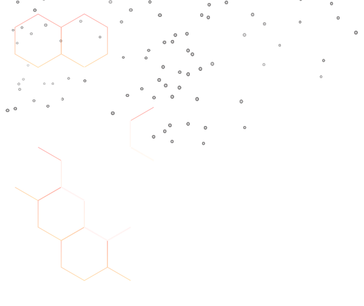

كيف تقرأ تحليل السكر التراكمي HbA1c؟
دليل مبسط لفهم معنى السكر التراكمي والفرق بينه وبين سكر الصائم، وماذا تعني كل نسبة.
اقرأ المزيد ←
مجاناً داخل نطاق محدد
مع طبيب متخصص مجاناً
معظم التحاليل في نفس اليوم
اعتمادات ومعايير دولية
منظومة متكاملة للتحاليل الطبية تجمع بين الخبرة الطبية والتقنية الحديثة، لتقديم نتائج دقيقة وخدمة إنسانية راقية.
تأسس معمل الدكتور عبد الله جعفر للتحاليل الطبية ليكون مرجعاً موثوقاً في مجال التحاليل الطبية، حيث نجمع بين الكفاءة العلمية لفريقنا الطبي وأحدث الأجهزة المعملية، لنمنح كل مريض نتيجة يستطيع أن يبني عليها قراره العلاجي بثقة تامة.
نؤمن أن التحليل الطبي ليس مجرد رقم على ورقة، بل خطوة أولى نحو التشخيص الصحيح، لذلك نحرص على مراجعة كل نتيجة من أكثر من مستوى، ونقدم شرحاً مبسطاً لها.
خبرة علمية وعملية ممتدة في مجال التحاليل الطبية والتشخيص المعملي.
يمتلك الأستاذ الدكتور عبد الله جعفر خبرة واسعة في مجال التحاليل الطبية والتشخيص المعملي، وقد أشرف على آلاف الحالات المعملية في مختلف التخصصات، ويؤمن بأن دقة النتيجة هي حجر الأساس في رحلة علاج المريض.
قائمة شاملة من التحاليل الطبية مع شرح مبسط لكل تحليل، وباقات مصممة لتناسب احتياجك.
تحليل شامل لمكونات الدم يقيّم الأنيميا، الالتهابات، المناعة، ومشاكل التجلط.
قياس مستوى الجلوكوز في الدم للكشف عن السكري ومتابعة مرضى السكري.
مجموعة إنزيمات وبروتينات تقيس كفاءة الكبد وتكشف عن الالتهاب أو التليف.
قياس الكرياتينين واليوريا وحمض اليوريك لتقييم كفاءة الكلى ومتابعة المرضى المزمنين.
تحليل الكوليسترول الكلي والدهون الثلاثية لتقييم خطر أمراض القلب والشرايين.
قياس هرمونات T3 و T4 و TSH لتشخيص نشاط أو خمول الغدة الدرقية.
فحوصات أساسية للكشف عن الأمراض الوراثية والمعدية قبل الزواج لضمان صحة الأسرة.
هرمون الحمل، صورة الدم، السكر، وفصيلة الدم لمتابعة صحتك وصحة الجنين.
قياس فيتامين د، B12، الحديد، الكالسيوم والماغنسيوم لكشف حالات النقص.
قياس التستوستيرون والهرمونات المرتبطة لتشخيص مشاكل الخصوبة والضعف.
FSH، LH، الإستروجين والبروجستيرون لمتابعة التبويض وتشخيص تأخر الحمل.
قياس البرولاكتين وهرمونات النخامية لتشخيص اضطرابات الدورة والإفراز.
السكر التراكمي HbA1c ومقاومة الأنسولين لمتابعة دقيقة لمرضى السكري.
مجموعة فحوصات مساعدة في متابعة الحالات ومعرفة استجابة العلاج.
فحوصات الأجسام المضادة والحساسية الغذائية والموسمية.
مناسبة للفحص الدوري السريع والاطمئنان على الصحة العامة.
تغطية موسّعة لأهم وظائف الجسم في تحليل واحد وبخصم يصل إلى 50%.
مصممة خصيصاً لمتابعة صحة كبار السن والأمراض المزمنة.
تشمل الهرمونات والحديد والغدة الدرقية وصحة العظام.
متابعة النمو والأنيميا والفيتامينات والمناعة للأطفال.
باقة فحوصات معتمدة للشركات والمصانع تشمل الفحص العام وفحوصات السلامة المهنية.
برنامج فحص دوري للموظفين مع تقرير إحصائي مجمّع للإدارة وتقارير فردية سرية.
فرق طبية متحركة لسحب العينات داخل المدارس والجامعات مع تقارير منظمة.
دليل مبسط يساعدك على الاستعداد الصحيح للتحليل لضمان دقة النتيجة من المرة الأولى.
نظام الباركود في المعمل هو تقنية متكاملة لربط العينات والمريض بقاعدة بيانات رقمية، لتجنّب الأخطاء البشرية وتسريع العمل.
المزيـدبرنامج متكامل يمنحك خصومات حقيقية على التحاليل، ونقاطاً تتحول إلى تحاليل مجانية.
استفد من أكبر خصم على الباقة الشاملة، بالإضافة إلى خصم خاص لأول 100 شخص يحجز عبر الموقع، وكود خصم لمتابعي صفحات التواصل الاجتماعي.
احجز الآن واستفد بالخصمإجابات سريعة على أكثر الأسئلة التي تصلنا من المرضى.
يعتمد على نوع التحليل. تحاليل السكر والكوليسترول ووظائف الكبد والكلى تحتاج صياماً من 8 إلى 12 ساعة، بينما صورة الدم الكاملة وتحاليل الغدة الدرقية وفيتامين د لا تحتاج صياماً. يُسمح بشرب الماء أثناء الصيام. فريق الحجز سيخبرك بالتعليمات الخاصة بتحليلك.
معظم التحاليل الروتينية مثل صورة الدم والسكر ووظائف الكبد والكلى تظهر نتائجها في نفس اليوم. بعض التحاليل المتخصصة مثل الهرمونات وبعض الفحوصات المناعية قد تحتاج من 24 إلى 72 ساعة. يمكنك استلام النتيجة إلكترونياً عبر الواتساب أو استلامها ورقياً من الفرع.
احرص على النوم الجيد قبل التحليل، وتجنّب المجهود البدني العنيف، وأخبر الفريق الطبي بكل الأدوية والمكملات التي تتناولها. اتبع تعليمات الصيام إذا كان مطلوباً، ولا توقف أي دواء من تلقاء نفسك دون استشارة طبيبك. يمكنك الاطلاع على قسم «كل المعلومات التي تحتاجها قبل حجز التحليل» في الموقع.
نعم، نوفر خدمة سحب العينة من المنزل مجاناً داخل النطاق الجغرافي المحدد، بفريق متخصص يستخدم أدوات معقمة لمرة واحدة. يمكنك طلب الخدمة من خلال نموذج الحجز في الموقع أو عبر الواتساب، وسيتم تحديد الموعد المناسب لك.
نعم، لدينا برنامج نقاط وخصومات متكامل يشمل: خصم 50% على التحليل الشامل، خصومات على كل تحليل، تحليل مجاني بعد عدد معين من الزيارات، خصومات جماعية للعائلات والشركات والمدارس، خصومات لكبار السن والطلاب وذوي الاحتياجات الخاصة، اشتراكات شهرية وسنوية للمرضى المحتاجين لتحاليل متكررة، وعروض موسمية. تفاصيل كاملة في قسم «برنامج النقاط والخصومات».
بالتأكيد. نوفر خدمة شرح النتائج مع الطبيب لتفسير أرقام تقريرك بشكل مبسط، ومعرفة ما إذا كانت ضمن المعدل الطبيعي، وما الخطوات التالية. يمكنك طلب الخدمة عند الحجز أو بعد استلام النتيجة.
نعم، السرية الكاملة مبدأ أساسي لدينا. جميع بيانات المرضى ونتائجهم محفوظة بنظام إلكتروني آمن، ولا يتم تسليم أي نتيجة إلا لصاحبها أو من يفوضه بشكل رسمي.
احجز موعدك الآن واطلب سحب العينة من المنزل مجاناً داخل النطاق المحدد، أو تواصل معنا مباشرة على الواتساب وهنساعدك تختار التحليل المناسب.
مقالات مبسطة تساعدك على فهم تحاليلك والوقاية من الأمراض المزمنة.
دليل مبسط لفهم معنى السكر التراكمي والفرق بينه وبين سكر الصائم، وماذا تعني كل نسبة.
اقرأ المزيد ←تعرّف على العلامات التي تستدعي إجراء تحليل وظائف الكلى فوراً، وكيف تحمي كليتك.
اقرأ المزيد ←ما الفرق بين الكوليسترول النافع والضار؟ ومتى تحتاج لتحليل الدهون الكاملة؟
اقرأ المزيد ←الصيام، التوقيت، الأدوية، المجهود البدني... كل ما يجب مراعاته قبل سحب العينة.
اقرأ المزيد ←لماذا تنتشر الأنيميا بين النساء؟ وما التحاليل التي تكشف السبب الحقيقي؟
اقرأ المزيد ←أعراض نقص فيتامين د، الفئات الأكثر عرضة، والتحليل الذي يحدد مستواه بدقة.
اقرأ المزيد ←